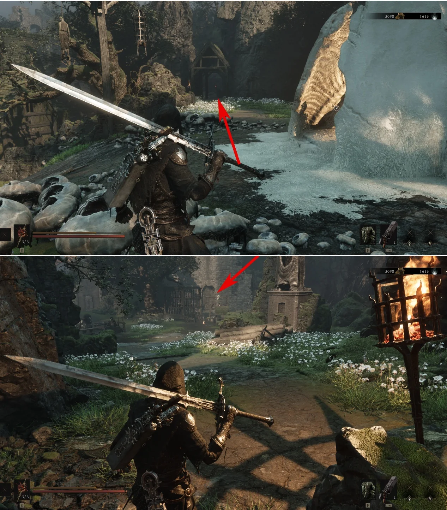
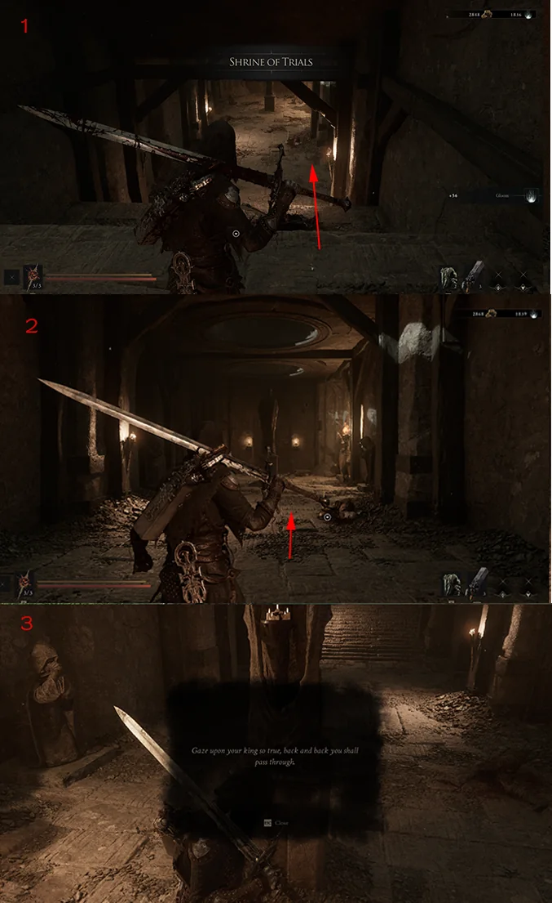
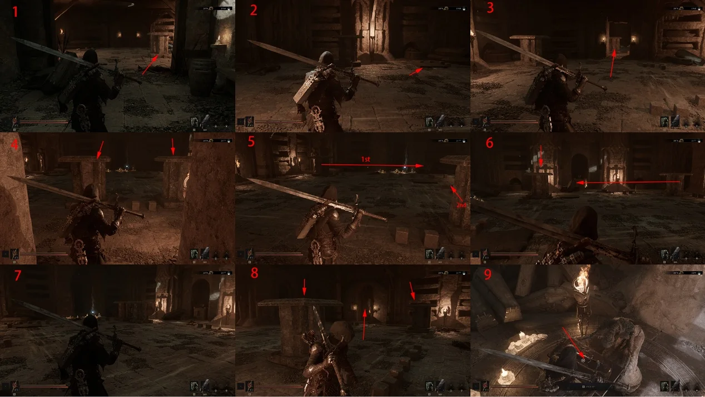

Follow this captured route from Mushroom Village Beacon to obtain Axe & Dagger.
Region
Fainweald
Starting point
Mushroom Village Beacon
Base damage
30

Route 01Travel to Mushroom Village Beacon and take the left route.

Route 02Use the key to enter Shrine of Trials. Defeat the enemies, read the note behind the stone statue, then back away while facing it to open the door.

Route 03Inside, strike the stone blocks into the arrow-marked positions to open each room. Defeat the enemies, place the final block on its pressure plate, then collect Axe & Dagger at the statue.